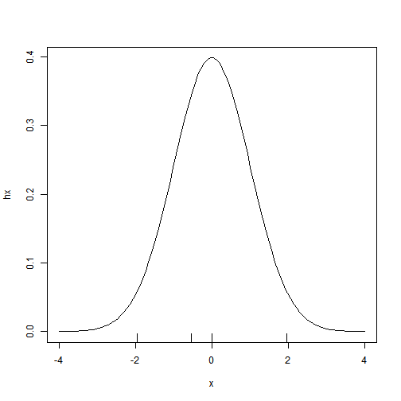
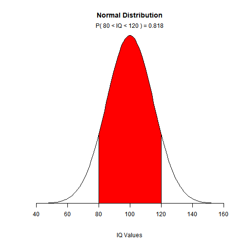
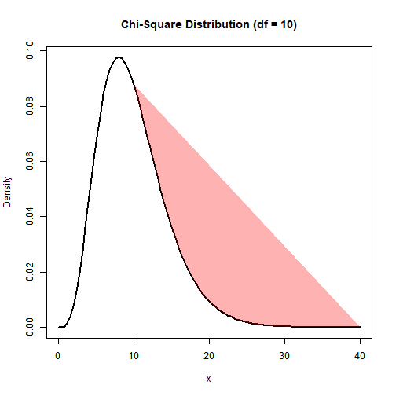
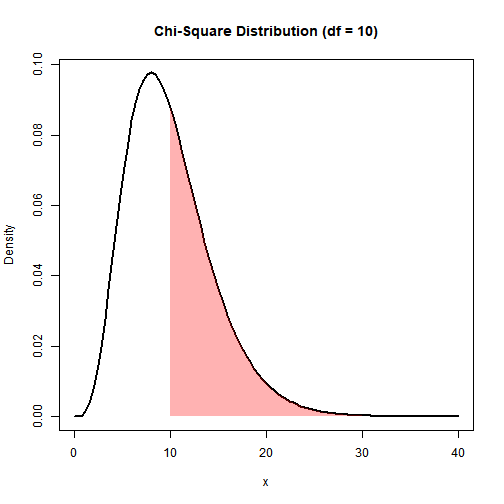

Chapter 7
某公司宣稱生產的輪軸,直徑為5CM,標準差為1CM,如何確定是否為真?
x<-c(3.801895,5.214785,5.445979,4.293448,7.401404,4.156799,6.029400,3.982314,3.605331,4.707879,4.087529,4.635022,5.597247,3.889285,6.268631,
6.304441,5.565396,5.380210,1.754372,5.449418)
u.test<-function(x,mu,thegma)
{ Se=thegma/sqrt(length(x))
u=(mean(x)-mu)/Se
p=pnorm(u)
list(u=u, p=p)
}
rst<-u.test(x,5,1)
rst
#> $u
#> [1] -0.543189
#>
#> $p
#> [1] 0.2934998m<-qnorm(0.975)
x <- seq(-4, 4, length=100)
hx <- dnorm(x)
plot(x,hx,"l")
rug(c(-m,rst$u,0,m))
hw1 or background
Children’s IQ scores are normally distributed with a mean of 100 and a standard deviation of 15. What proportion of children are expected to have an IQ between 80 and 120?

continue
汽車廠商聲稱每加侖可走的里程不低於25mile,標準差2.4mile。
u.test<-function(x,mu,thegma,alternative="twoside")
{ Se=thegma/sqrt(length(x))
u <-(mean(x)-mu)/Se
p <-pnorm(u)
if(alternative=="twoside") p<-2*(1-pnorm(abs(u)))
else if (alternative=="less") p<-pnorm(u)
else p <- 1-pnorm(u)
list(u=u, p=p)
}b=c(22,24,21,24,23,24,23,22,21,25)
u.test(b, 25,2.4,"less")
#> $u
#> [1] -2.766993
#>
#> $p
#> [1] 0.002828799hint:
0.002828799 0.025 0 0.975t.test()
類似上題,但是不知道標準差
x=c(502,496,510,508,506,498,512,497,515,503,510,506)
t.test(x,mu=500,alternative ="greater")
#>
#> One Sample t-test
#>
#> data: x
#> t = 2.9564, df = 11, p-value = 0.006529
#> alternative hypothesis: true mean is greater than 500
#> 95 percent confidence interval:
#> 502.0609 Inf
#> sample estimates:
#> mean of x
#> 505.25方差檢驗
已經知道母方差
var.test1<-function(x, sigma2){
n<-length(x)
S2=var(x)
df=n-1
chi2<-df*S2/sigma2;
P<-pchisq(chi2,df)
data.frame(var=S2, df=df, chisq2=chi2, P_value=P)
}
#x=rnorm(20,500,20)
x=c(512.952899108198, 503.85274864927, 495.06951127009, 477.193305294993,
509.400520346022, 493.249014260413, 492.456674317536, 530.078195416527,
498.757258963417, 522.657000900506, 510.041124496973, 490.505063978937,
536.24855605503, 530.039965979141, 495.559165160148, 466.840695851664,
510.702680801237, 524.485012890925, 490.37616974915, 485.579333872921
)
var.test1(x,400)
#> var df chisq2 P_value
#> 1 346.8209 19 16.47399 0.3745438未知母體變異數:var.test()
ex7.6 兩批產品的變異數是否相同
x1=c(24, 29, 39, 40, 32, 32, 31, 44, 37, 37, 50, 28, 24, 48, 25,
40, 32, 34, 35, 41)
x2=c(44, 34, 36, 38, 30, 30, 35, 38, 40, 46, 38, 35, 38, 36, 38,
40, 34, 37, 40, 46)
var.test(x1,x2)
#>
#> F test to compare two variances
#>
#> data: x1 and x2
#> F = 2.9283, num df = 19, denom df = 19, p-value = 0.02385
#> alternative hypothesis: true ratio of variances is not equal to 1
#> 95 percent confidence interval:
#> 1.159058 7.398216
#> sample estimates:
#> ratio of variances
#> 2.928304cont
x1=c(48,47,44,45,46,47,43,47,42,48)
x2=c(36,45,47,38,39,42,36,42,46,35)
var.test(x1,x2)
#>
#> F test to compare two variances
#>
#> data: x1 and x2
#> F = 0.22732, num df = 9, denom df = 9, p-value = 0.03793
#> alternative hypothesis: true ratio of variances is not equal to 1
#> 95 percent confidence interval:
#> 0.05646413 0.91520616
#> sample estimates:
#> ratio of variances
#> 0.2273243配對樣本的均值檢驗
ex7.8 服藥前後是否有差異
before = c(94.5,101,110,103.5,97,88.5,96.5,101,104,116.5)
after = c(85,89.5,101.5,96,86,80.5,87,93.5,93,102)
t.test(before,after,paired=T) # <div class="tooltip">📝<span class="tooltiptext" style="background: rgb(255 255 255 / 37%); margin: 0; padding: 0;border:solid orange;">第三個參數</span></div>
#>
#> Paired t-test
#>
#> data: before and after
#> t = 14.164, df = 9, p-value = 1.854e-07
#> alternative hypothesis: true difference in means is not equal to 0
#> 95 percent confidence interval:
#> 8.276847 11.423153
#> sample estimates:
#> mean of the differences
#> 9.85如果不是配對樣本,要檢驗均值
1) 是否常態分配ks.test() lillie.test()
2) 是否同樣的方差,方差同值檢定:var.test()
來自常態
ks.test(rnorm(100, mean = 5, sd = 3),"pnorm",mean=5,sd=3)#來自常態
#>
#> One-sample Kolmogorov-Smirnov test
#>
#> data: rnorm(100, mean = 5, sd = 3)
#> D = 0.066346, p-value = 0.7709
#> alternative hypothesis: two-sided
ks.test(rnorm(100, mean = 5, sd = 3),rnorm(100, mean = 5, sd = 3)) #來自同一母體
#>
#> Two-sample Kolmogorov-Smirnov test
#>
#> data: rnorm(100, mean = 5, sd = 3) and rnorm(100, mean = 5, sd = 3)
#> D = 0.12, p-value = 0.4676
#> alternative hypothesis: two-sidedlibrary(nortest)
lillie.test(rnorm(100, mean = 5, sd = 3))
#>
#> Lilliefors (Kolmogorov-Smirnov) normality test
#>
#> data: rnorm(100, mean = 5, sd = 3)
#> D = 0.048436, p-value = 0.81659
heads <- rbinom(1, size = 100, prob = .5)
prop.test(heads, 100) # continuity correction TRUE by default
#>
#> 1-sample proportions test with continuity correction
#>
#> data: heads out of 100, null probability 0.5
#> X-squared = 0.81, df = 1, p-value = 0.3681
#> alternative hypothesis: true p is not equal to 0.5
#> 95 percent confidence interval:
#> 0.4475426 0.6485719
#> sample estimates:
#> p
#> 0.55
prop.test(heads, 100, correct = FALSE)
#>
#> 1-sample proportions test without continuity correction
#>
#> data: heads out of 100, null probability 0.5
#> X-squared = 1, df = 1, p-value = 0.3173
#> alternative hypothesis: true p is not equal to 0.5
#> 95 percent confidence interval:
#> 0.4524460 0.6438546
#> sample estimates:
#> p
#> 0.55
## Data from Fleiss (1981), p. 139.
## H0: The null hypothesis is that the four populations from which
## the patients were drawn have the same true proportion of smokers.
## A: The alternative is that this proportion is different in at
## least one of the populations.
smokers <- c( 83, 90, 129, 70 )
patients <- c( 86, 93, 136, 82 )
prop.test(smokers, patients)
#>
#> 4-sample test for equality of proportions without continuity
#> correction
#>
#> data: smokers out of patients
#> X-squared = 12.6, df = 3, p-value = 0.005585
#> alternative hypothesis: two.sided
#> sample estimates:
#> prop 1 prop 2 prop 3 prop 4
#> 0.9651163 0.9677419 0.9485294 0.8536585chisq
curve(dchisq(x, df = 10), from = 0, to = 40)
是否來自同一母體
die.fair = sample(1:6,100,p=c(1,1,1,1,1,1)/6,rep=T) # 均匀骰子
die.bias = sample(1:6,100,p=c(.5,.5,1,1,1,2)/6,rep=T) # 不均匀骰子
res.fair = table(die.fair)
res.bias = table(die.bias)
count = rbind(res.fair,res.bias)
chisq.test(count)
#>
#> Pearson's Chi-squared test
#>
#> data: count
#> X-squared = 17.453, df = 5, p-value = 0.003716
ks.test(die.fair,die.bias)
#> Warning in ks.test(die.fair, die.bias): p-value will be approximate in the
#> presence of ties
#>
#> Two-sample Kolmogorov-Smirnov test
#>
#> data: die.fair and die.bias
#> D = 0.2, p-value = 0.03663
#> alternative hypothesis: two-sidedtest
smokers <- c( 83, 90, 129, 70 )
patients <- c( 86, 93, 136, 82 )
chisq.test(rbind(smokers, patients))
#>
#> Pearson's Chi-squared test
#>
#> data: rbind(smokers, patients)
#> X-squared = 0.42241, df = 3, p-value = 0.9356polygon
#create density curve
curve(dchisq(x, df = 10), from = 0, to = 40,
main = 'Chi-Square Distribution (df = 10)',
ylab = 'Density',
lwd = 2)
#create vector of x values
x_vector <- seq(10, 40)
#create vector of chi-square density values
p_vector <- dchisq(x_vector, df = 10)
#fill in portion of the density plot from 0 to 40
polygon(x_vector, p_vector,
col = adjustcolor('red', alpha=0.3), border = NA)
#create density curve
curve(dchisq(x, df = 10), from = 0, to = 40,
main = 'Chi-Square Distribution (df = 10)',
ylab = 'Density',
lwd = 2)
#create vector of x values
x_vector <- seq(10, 40)
#create vector of chi-square density values
p_vector <- dchisq(x_vector, df = 10)
#fill in portion of the density plot from 0 to 40
polygon(c(x_vector, rev(x_vector)), c(p_vector, rep(0, length(p_vector))),
col = adjustcolor('red', alpha=0.3), border = NA)